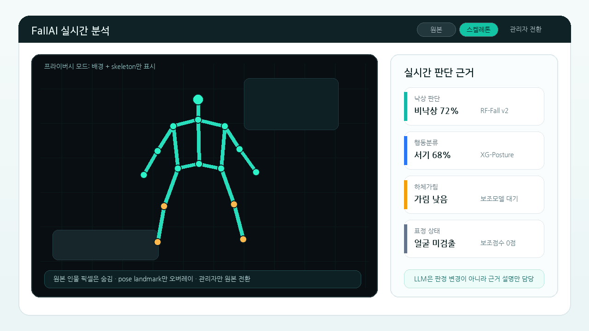

이번 발표는 표정 상태 보조모델과 하체가림 전처리 보조모델을 같은 비중으로 정리
| 단계 | 모델/처리 | 역할 | 이번 발표 포인트 |
|---|---|---|---|
| 1 | Pose/BBox feature | 사람의 위치, 자세, 이동량, visibility 추출 | 프라이버시 화면은 skeleton-only로 표시 |
| 2 | RF-Fall v2 | 낙상/비낙상 주 판정 | 현재 기준 F1 0.9302, recall 95.36% |
| 3 | XG-Posture | 비낙상 구간 행동 설명 | 하체가림 상황에서 흔들림이 커서 보조모델 추가 |
| 4 | Occlusion-Aux | 하체가림 전처리로 만든 보조 판단 | 가림 조건 F1 0.8657 |
| 5 | FacialRisk-Aux | 표정/주의저하 근거를 하나의 보조 evidence로 합산 | 100개 확장검증 기준 판정개선 0건, harmful 0건 |
| 보조모델 | 왜 만들었나 | 검증 결과 | 현재 결론 |
|---|---|---|---|
| Occlusion-Aux | 하체가 침대/가구/화면 밖으로 가려질 때 stand/sit/lie가 흔들림 | 가림 조건 F1 0.8657 / Acc 0.8663 | 가림 hard-case에서는 기존 행동분류보다 도움 확인 |
| FacialRisk-Aux | 낙상 near-miss에서 표정/주의저하 evidence가 빠져 FN이 남음 | 100개 확장검증 F1 0.9149 → 0.9149, harmful 0건 | 현재 데이터에서는 판정 성능 개선 미확인, 얼굴 ROI가 병목 |
| 표시 이름 | 기존 번호 | 학습 목적 | 현재 성능 | 운영 해석 |
|---|---|---|---|---|
| EmotionGuard-82 | AI-Hub 82 | 한국인 감정 7-class | Acc 62.06%, Macro F1 0.6198 | 불안/상처/슬픔 같은 감정 근거. 단독 낙상 근거로는 약함 |
| DrowsyState-173 | AI-Hub 173 | 졸음/하품/주의저하 5-class | Acc 90.22%, Macro F1 0.9054 | 졸음/하품처럼 명확한 상태 근거가 비교적 안정적 |
| FacialRisk-Aux | 통합 출력 | 두 모델의 evidence를 late fusion | 단일 support score로 표시 | 화면과 발표에서는 표정 보조모델 하나처럼 설명 |
| 검증 항목 | 결과 | 의미 |
|---|---|---|
| 동일 테스트 샘플 | 100개 | AI-Hub 71641에서 낙상 50 / 비낙상 50 균형 추출 |
| 표정 보조 전후 F1 | 0.9149 → 0.9149 | 순수 score A/B에서는 최종 판정 변화 없음 |
| Recall | 0.8600 → 0.8600 | FN 7건 유지 |
| 실제 반영 건수 | 1/100 | support 14건, blocked 10건, 얼굴 미검출 65건 |
| 판정 변화 | 0건 | helpful 0건, harmful 0건 |
| 문제 | 왜 중요한가 | 다음 조치 |
|---|---|---|
| 얼굴이 작거나 안 보임 | 100개 중 얼굴 미검출 65건 | 상체/전체 프레임 fallback을 추가했고, 실제 얼굴 검출률 지표로 gate |
| 82 감정모델 한계 | 불안 F1 0.4532, 상처 F1 0.3788로 약한 클래스가 있음 | 감정 자체보다 distress/normal 이진 보조로 재정의 |
| 173 도메인 차이 | 운전자 상태 데이터라 병실/실내 낙상과 완전히 같지 않음 | 졸음/하품/눈감김 evidence로만 제한 |
| 실환경 데이터 부족 | 낙상 전후 표정, 누운 상태 얼굴, 가림 얼굴이 부족 | 실제 설치각 데이터로 near-miss rescue 기준 재검증 |
| 항목 | 내용 |
|---|---|
| 왜 만들었나 | 하체가 침대/가구/화면 밖으로 가려지면 stand/sit/lie 판단이 흔들려 미확인이나 오분류가 늘어남 |
| 전처리 | 기존 posture window에서 하체 영역을 0.55/0.62/0.70 비율로 가림 처리해 lower-body occlusion 샘플 생성 |
| 누수 방지 | 원본과 가림 샘플을 같은 group으로 묶어 train/val에 동시에 섞이지 않게 분리 |
| 학습 | ExtraTrees balanced · feature 105개 · 가림 window 4,500개 |
| 적용 | 하체 visibility가 낮거나 posture confidence가 낮을 때 기존 XG-Posture를 보조 |
| 비교 | 수치 | 해석 |
|---|---|---|
| 기존 XG-Posture | F1 0.6513 / Acc 0.6602 | 일반 행동분류 기준. 하체가림 hard-case에 약함 |
| Occlusion-Aux | F1 0.8657 / Acc 0.8663 | 가림 전처리 조건에서 행동/자세 보조 성능 개선 |
| RF 주 판정 기여 | occlusion_fall_risk rank 4/65, importance 0.0564 | 가림 관련 feature가 낙상 판정에서도 상위 근거로 사용됨 |

| 항목 | 현재 결론 | 다음 개선 |
|---|---|---|
| 표정 보조 | 100개 확장검증 F1 0.9149 → 0.9149, harmful 0건 | 현재는 판정 근거 표시용에 가깝고, 성능 개선은 얼굴 ROI/실제 설치각 데이터 확보 후 재검증 |
| 82+173 통합 | 지금은 내부 2개 모델을 FacialRisk-Aux 하나의 보조점수로 합산 | 공통 라벨(normal/distress/drowsy/unknown) 데이터가 생기면 단일 모델 재학습 |
| 가림 보조 | 가려진 하체 조건의 행동/자세 판정에는 도움 확인 | 실제 침대/가구 가림 데이터로 보강 |
| 발표 메시지 | 가림은 행동/자세 보조 효과 확인, 표정은 현 데이터에서 성능 개선 미확인 | 표정은 입력 품질, 가림은 실제 가림 데이터가 핵심 |